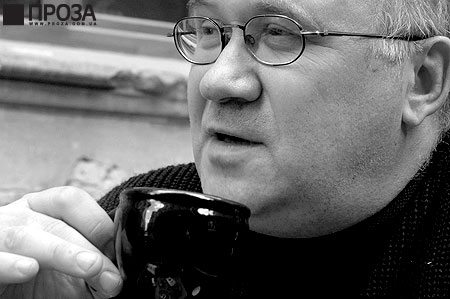
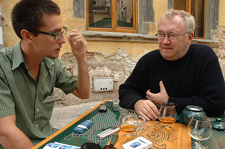
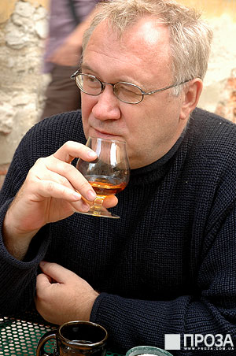
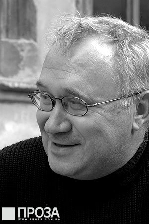

Анатолий Ульянов. Поэт постчеловечества
Интервью с Ильей Кормильцевым
Легендарный поэт-текстовик «Наутилуса», а ныне главный редактор радикально-экстравагантного российского издательства «Ультра.Культура» Илья Кормильцев похож на растение. Такое умозаключение «ПРОЗА» сделала во время интервью, взятого у Ильи на 12-ом Форуме Издателей во Львове. И всё потому, что во время этого интервью стало понятно, что Кормильцев отвечает на вопросы весьма специфическим образом. Вопросы, под метафизическим давлением Ильи, утрачивали свой конкретный смысл и, скорее, служили отправными точками, из которых Кормильцев-растение разрастался в актуальную философию. Не смотря на то, что это абсолютно обесценивало в данном контексте роль журналиста, «ПРОЗЕ» удалось получить от Ильи невероятно концентрированный сгусток философской энергии, представляющий весьма нетрадиционное мировоззрение.
Как вы относитесь к доктрине копирайта?
Отношусь сложно и двойственно. С одной стороны, я всю жизнь от этой доктрины завишу и должен её поддерживать, а с другой стороны, отношусь к ней негативно. Я считаю, что информация не является товаром, поскольку она не материальна, и, соответственно, поддается бесконечному копированию без ухудшения качества и изменения количества. Традиционное право собственности основано на уникальности объекта, который находится в собственности собственника. Уникальности файла не существует.
Когда я начал интересоваться современным искусством и узнавать, каким образом решается проблема уникальности и оригинала у дигитальных художников, то выяснилось, что решается она весьма фальшивыми путями – попытками применить сегодня старые технологии, переписав само определение оригинала. Оригинала нет. Проблема состоит в том, что художник должен выживать. Выживать не в утопическом обществе, которого не существует, а в той данности, которая есть. На большинстве территорий нашей планеты эта данность сейчас тотально капиталистична. Соответственно, считается, что результатом труда художника является товар, который должен продаваться. Это никак не соответствует моему представлению того, как должно быть устроено общество и, в частности, искусство. Но поскольку я завишу от этой плохой системы, то за 15 лет работы потерял от её плохого функционирования от миллиона до 2,5 млн. $, что может раздосадовать каждого, учитывая, что получил я всего 10-15% от этой суммы.
Буржуазная часть моего сознания хотела бы, чтобы мне платили за каждую цитату, а креативная говорит, что всё нужно менять. Решение, как всегда, должно быть диалектическим. Пока мы живем в этом обществе, мы должны требовать исполнения принятых им же законов. Потому что нам нужно жить и кушать, чтобы потом провести революцию, которая отменит копирайт.

Илья Кормильцев (Фото: Н.Машарова)
Если говорить о предельном решении этого вопроса, то тут все укладывается в мою постгуманистическую философию и теорию – я убежден, что человек, прошедший материальную эволюцию, не может создать организменные объединения или общества, которые могли бы решить эти проблемы. Чтобы такие общества стали реальными, их должны строить другие люди.
Наивные коммунисты в конце 19-го века, в силу того, что были ещё плохо знакомы с психологией и подсознанием, считали, что другого человека можно воспитать посредством педагогики. Оказалось, что это не так. Есть базисные психологические механизмы, образовавшиеся ещё в доразумной природе, которые не могут быть преодолены воспитанием. Воспитание отвечает лишь за 10-15% поведения человека. Поэтому коммунизм потерпел поражение. Нельзя требовать от эгоистичной обезьяны, которая заинтересована лишь в продолжении рода, работы в качестве коллективного организма. До определенной степени она может симулировать это в своих интересах, а отдельные индивиды со специфическим сознанием могут даже так жить, но общество в целом начинает создавать симулякр того, что от него требуют. Когда симулякр становится всеобъемлющим, такое общество гибнет за счет фальшивости своего явленного и скрытого. Скорость, с которой это стало происходить, постоянно увеличивается… это, кстати, по поводу оранжевой революции. Если раньше между событием и разочарованием пролегали десятилетия, то сейчас хватает нескольких лет или месяцев, а в Эквадоре, к примеру, недавно хватило всего нескольких дней. Население Эквадора искренне и всенародно 70% голосованием избрало нового президента, а на четвертый день им показали видеоленту, где он берет взятку, вспыхнула революция, и его свергли.
Назовите и другие признаки скоропостижной кончины социума, в контексте вопроса об обществе всеобъемлющего симулякра.
Очевидно, что эта кончина лежит в пределах исторического будущего. Разочарование в интеллектуальных механизмах становится всеобъемлющим и выходит за пределы интеллектуальной элиты общества. Представительная демократия полностью дезавуированная на всей без исключения территории земного шара. Конечно, её механизм может действовать, даже если 100% населения будут уверены, что выборы фальсифицированы, потому что все выборы фальсифицированы.
Кстати, в пример можно привести оранжевую революцию – она была ответом фальсификацией на фальсификацию, клин вышибли клином. Один симулякр заменили другим симулякром.

Илья Кормильцев (Фото: Н.Машарова)
Истина невозможна в такой ситуации. Она отменяется уже самими исходными условиями этой ситуации. Истина – это некий абстрактный человек времен модернизма, который существовал. Он не смотрит телевизор и не ведется на агитацию, а делает персональные выводы о качестве того или иного кандидата. Ситуация выборов была не достаточно чиста уже и в те модерные времена, а во времена постмодерна является полностью симулированной. Что мы знаем о том или ином кандидате? Как убедительно доказал Пелевин в своих произведениях, мы даже не уверены в их существовании – существовании персонажей, которых нам показывают – Буш, Берлускони, Путин, Ющенко. Существуют ли эти люди? Кто-то подойдет ко мне и скажет: «Я видел их и общался с ними», а я скажу: «Тебе денег заплатили, чтобы ты мне это рассказывал».
Неверифецируемость политики перестала быть верифицируемой. По идее, она не была такой никогда. Любой социальный механизм управления есть отчуждение. Такой механизм начинается, собственно, с отчуждения, то есть невозможности человека принимать решения самому за всех. То есть, должно быть государство, которое принимает эти решения. В традиционных обществах эта неверифицируемость подменялась верой в божественный порядок, в который входило государство и его управление. Как только вера была разрушена и начались попытки объективно понять государство, то в процессе познания стало ясно: государство – это симуляция.
Возможно ли преодолеть общество симуляции и смутного сознания, породить человека сознания чистого, который мыслит индивидуальными, а не символическими категориями?
Это возможно лишь с преодолением общества. Преодоление общества лежит не на пути философских рассуждений, но на пути технологических инноваций. Технологические инновации ломают традиционное устройство общества сильнее любой идеологемы. Так оно было и всегда, но раньше был больший период рефлексий, отпущенный обществу на освоение. В отчужденной форме это воспринималось как изменение идеологической базы. Иными словами, совокупности философем, которыми пользуются при принятии решений управители общества. Но всегда, и это пытался доказать марксизм, философия лишь отражала свершившиеся изменения в производственной базе. Раньше это было неочевидно. Проходил большой оборот времени. Сейчас философия даже не успевает освоить происходящие изменения в хозяйственной базе. Они воздействуют на общества непосредственно. Любое появление какого угодно религиозного пророка не способно произвести такое впечатление на общество, как, например, возможности нанобиотехнологий и изменения реальных параметров физического тела. Технология становится обнаженным механизмом общественных отношений.
И механизмом преодоления общества?
Да. Современное общество находится в шизоидном состоянии, потому что руководствуется представлением об информации как основной ценности, о мире как движении нематериальных потоков, того, что мы раньше называли духом или эфиром. При этом никакое количество телеканалов не спасет любое современное государство от отсутствия муки, хлеба и мяса. Существует шизофреническая расчлененность между тем слоем человеческой жизни, который образуется деятельностью разума, и тем слоем, который образуется деятельностью тела. Оно никогда не было столь глубоко. До 19-го века любая философия была по своей природе натурфилософией. Она все равно обсуждала нечто наличное, что полагалось неизменным от сотворения. Она рефлексировала о наличности. Сейчас под сомнением находится сама наличность. При этом она, естественно, не изжита. Как бы мы не рассуждали про символы, симулякры и лингвистические коды, мы понимаем, что пока мы имеем дело с существами из плоти и крови, которых можно убить при помощи быстролетящих предметов, получается шизофрения. Всё общество поглощено смакованием информационного насилия, в то время как объем брутального дошел до максимума.

Илья Кормильцев (Фото: Н.Машарова)
В таком случае, необходимо уничтожить современного человека, дабы родился пост-человек. Каким образом мы должны уничтожить нынешнего человека?
Речь не идет о том, что мы должны уничтожить человека, мы говорим, что человек, в традиционном понимании, будет уничтожен. Он уже уничтожается. Это и есть содержание нынешней переходной эпохи, содержание этого момента. Проблема состоит в том, чтобы взять этот процесс под контроль, потому что он может совершаться в разных интересах. От того какой интерес господствует, будет зависеть каким предстанет общество будущего, образующееся в результате революции, которая будет похожа не столько на социальные революции, сколько на революцию неолитическую. Это не будет событием одного дня.
Каким образом можно взять этот процесс под контроль?
Только при помощи религиозной философии и религиозных отношений. Необходима новая телеологическая религия целепоставления «зачем существует человечество?».
Моё братство и моя вражда с традиционалистами заключается в следующем. Они правильно ставят задачу: человек уничтожен (таким, каким его знала традиционная религия) или почти уничтожен. Но дальше они говорят, что по этому поводу стоит вернуться назад. В этом – точка нашего расхождения. Нужно идти вперед. Консервативная революция не может победить. Она не может победить тенденцию отчуждения от природы, ибо эта тенденция лежит в основе человека как вида. Это его первое отличие, за которым следует речь, прямохождение, когнитивные способности. Всё вырастает из этого. Отчуждение – это раздор с природой. Залечить его они не могут. Это невозможно, потому что информация уже осознается по-другому. Если произойдет современный катаклизм, вроде атомной войны или падения метеорита, но уцелеет достаточное количество человеческой биомы, которая может продолжать действовать, иными словами, если не произойдет гибель вида, то человечество не будет стартовать из каменного века. Эйнштейн пошутил, когда сказал, что четвертая мировая война будет вестись исключительно камнями и палками. Будут воевать ещё более совершенным оружием. Технологии не исчезнут. «Жесткие диски» выносливей людей. Даже если после катастрофы на земле останется два миллиона человек, у них все равно уже будут компьютеры, они будут знать, как делать электричество, они построят электростанцию через три недели. Процесс этот невозможно обратить.
Нужно ответить на вопрос – во имя чего в космическом плане такой процесс осуществляется? Нужно ответить на вызов. К примеру, если предположить, что дьявол может использовать технологии и прогресс против человека, то почему бог не может обратить их во благо? Традиция отрицает диалектику присущую любому знанию, любой технологической инновации. В этом ошибка. Нельзя обратить время вспять и вернуть прошлое, воюя за традиционную цивилизацию и пользуясь при этом спутниковыми телефонами, как это делают талибы.
Давайте поговорим о вашем издательстве. Вокруг «Ультра.Культуры» сложилась определенная мифология, образ, гласящий: «Ультра.Культура» – издательство запрещенное, радикальное, опасное. Образ порождает спектакль, спектакль порождает симулякр. Не становится ли издательство заложником своего образа? Не становится ли образ – летающей фикцией? Происходит ли внутренняя борьба за преодоление симулякра?
Да, потому что образ ограничивает, и это притом, что любое успешное дело требует соблюдение имиджа. Как мне кажется, нас это не сильно связывает. Мы сталкиваемся с этой проблемой лишь в контексте журналистов и их восприятия, а не в среде издательства, его авторов и продавцов. Внутри издательства иные страхи. Мы начали бояться, что становимся слишком официозными…

Илья Кормильцев (Фото: Н.Машарова)
Расскажите о внутренних форматах издательства.
Внутренние форматы во многом определяются нашими финансовыми возможностями. Расширение этих форматов, зачастую, останавливает отсутствие сил или денег. Поэтому пока мы ограничиваемся профильной для нашего издательства литературой, да и занятую нишу нужно беречь. Что интересно, чем дальше от Москвы, тем больше «Ультра.Культура» воспринимается так, как она себя задумывала. В Москве же хорошим тоном считается не замечать нас. Впрочем, сейчас уже есть государственная тенденция дружить со всей оппозицией, кроме исламистов.
Это ещё раз доказывает, что тоталитаризм, демократия или анархия являются частью одного целого, единой идеологии, единой системы, которая по своей сути тоталитарна. Пляска симулякров получается.
Но это же интересно! В Обществе Спектакля всегда интересно находить моменты, ещё не освоенные спектаклем. Это стимулирует творчество и культурную жизнь. В классическом модернистском обществе, где ретроградам противостояли прогрессивные, становилось скучно жить. Большинство идеологически заряженных писателей 19-го века попросту скучно читать. Потому, что каждый из них считает свою истину истинной и уныло её талдычит.
Сейчас ситуация изменилась – ни один твой протест не является абсолютным. Он всегда может быть подвергнут присвоению.
То есть, пропагандируется антистабильность форм, постоянное изменение…
Конечно.
http://www.proza.com.ua/peoples/poet_postchelovechestva_d790.shtml